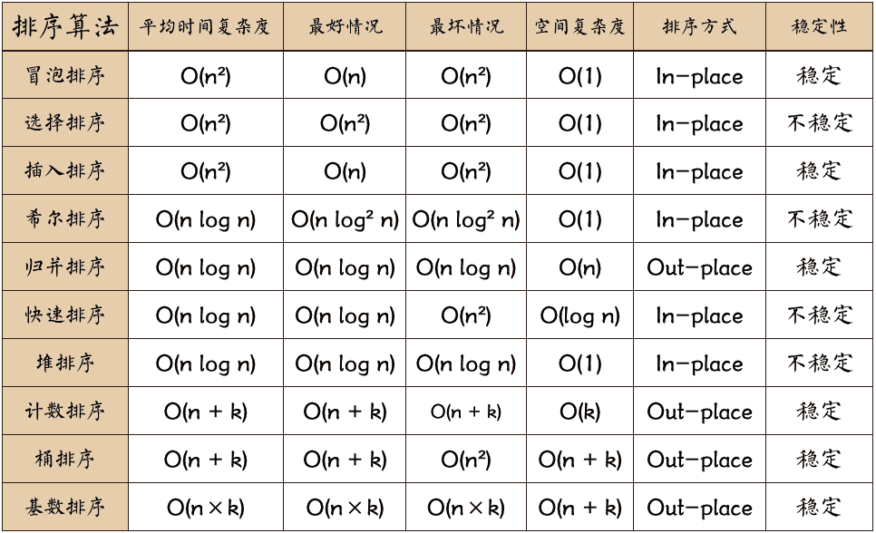

<!DOCTYPE html>


  <html class="light page-post">


<head><meta name="generator" content="Hexo 3.8.0">
  <meta charset="utf-8">
  
  <title>基本排序算法总结 | 胡思旺</title>

  <meta name="viewport" content="width=device-width, initial-scale=1, maximum-scale=1">

  
    <meta name="keywords" content="全栈,微服务,Java,Netty,Vue,机器学习,Python">
  

  <meta name="description" content="基本排序算法总结  内部排序是数据记录在内存中进行排序，排序过程中不需要访问外存    外部排序是数据量巨大，内存一次无法容纳所有的数据，排序过程中需要访问外存        排序算法的稳定性是指排序前后若存在相同关键字的元素之间相对次序没有改变，则这个排序算法就是稳定的；否则，这个排序算法就是不稳定的    冒泡排序  比较相邻的元素，如果第一个比第二个大，就交换相邻两个元素    对每一对相">
<meta property="og:type" content="article">
<meta property="og:title" content="基本排序算法总结">
<meta property="og:url" content="http://yoursite.com/2019/01/02/基本排序算法总结/index.html">
<meta property="og:site_name" content="胡思旺">
<meta property="og:description" content="基本排序算法总结  内部排序是数据记录在内存中进行排序，排序过程中不需要访问外存    外部排序是数据量巨大，内存一次无法容纳所有的数据，排序过程中需要访问外存        排序算法的稳定性是指排序前后若存在相同关键字的元素之间相对次序没有改变，则这个排序算法就是稳定的；否则，这个排序算法就是不稳定的    冒泡排序  比较相邻的元素，如果第一个比第二个大，就交换相邻两个元素    对每一对相">
<meta property="og:locale" content="default">
<meta property="og:image" content="http://yoursite.com/2019/01/02/基本排序算法总结/sort.png">
<meta property="og:image" content="http://yoursite.com/2019/01/02/基本排序算法总结/shellsort.PNG">
<meta property="og:image" content="http://yoursite.com/2019/01/02/基本排序算法总结/merge.PNG">
<meta property="og:image" content="http://yoursite.com/2019/01/02/基本排序算法总结/hs1.png">
<meta property="og:image" content="http://yoursite.com/2019/01/02/基本排序算法总结/tong.PNG">
<meta property="og:image" content="http://yoursite.com/2019/01/02/基本排序算法总结/jjsort.jpg">
<meta property="og:updated_time" content="2019-01-02T09:07:35.752Z">
<meta name="twitter:card" content="summary">
<meta name="twitter:title" content="基本排序算法总结">
<meta name="twitter:description" content="基本排序算法总结  内部排序是数据记录在内存中进行排序，排序过程中不需要访问外存    外部排序是数据量巨大，内存一次无法容纳所有的数据，排序过程中需要访问外存        排序算法的稳定性是指排序前后若存在相同关键字的元素之间相对次序没有改变，则这个排序算法就是稳定的；否则，这个排序算法就是不稳定的    冒泡排序  比较相邻的元素，如果第一个比第二个大，就交换相邻两个元素    对每一对相">
<meta name="twitter:image" content="http://yoursite.com/2019/01/02/基本排序算法总结/sort.png">

  

  
    <link rel="icon" href="/favicon.ico">
  

  <link href="/css/styles.css?v=c114cben" rel="stylesheet">


  
    <link rel="stylesheet" href="/css/personal-style.css">
  

  

  
  <script type="text/javascript">
    var _hmt = _hmt || [];
    (function() {
      var hm = document.createElement("script");
      hm.src = "//hm.baidu.com/hm.js?57e94d016e201fba3603a8a2b0263af0";
      var s = document.getElementsByTagName("script")[0];
      s.parentNode.insertBefore(hm, s);
    })();
  </script>


  
  <script type="text/javascript">
	(function(){
	    var bp = document.createElement('script');
	    var curProtocol = window.location.protocol.split(':')[0];
	    if (curProtocol === 'https') {
	        bp.src = 'https://zz.bdstatic.com/linksubmit/push.js';        
	    }
	    else {
	        bp.src = 'http://push.zhanzhang.baidu.com/push.js';
	    }
	    var s = document.getElementsByTagName("script")[0];
	    s.parentNode.insertBefore(bp, s);
	})();
  </script>


  

</head>
</html>
<body>


  
    <span id="toolbox-mobile" class="toolbox-mobile">盒子</span>
  

  <div class="post-header CENTER">
   
  <div class="toolbox">
    <a class="toolbox-entry" href="/">
      <span class="toolbox-entry-text">盒子</span>
      <i class="icon-angle-down"></i>
      <i class="icon-home"></i>
    </a>
    <ul class="list-toolbox">
      
        <li class="item-toolbox">
          <a class="CIRCLE" href="/archives/" rel="noopener noreferrer" target="_self">
            博客
          </a>
        </li>
      
        <li class="item-toolbox">
          <a class="CIRCLE" href="/project/" rel="noopener noreferrer" target="_self">
            项目
          </a>
        </li>
      
        <li class="item-toolbox">
          <a class="CIRCLE" href="/category/" rel="noopener noreferrer" target="_self">
            分类
          </a>
        </li>
      
        <li class="item-toolbox">
          <a class="CIRCLE" href="/search/" rel="noopener noreferrer" target="_self">
            搜索
          </a>
        </li>
      
        <li class="item-toolbox">
          <a class="CIRCLE" href="/about/" rel="noopener noreferrer" target="_self">
            联系
          </a>
        </li>
      
    </ul>
  </div>


</div>


  <div id="toc" class="toc-article">
    <strong class="toc-title">文章目录</strong>
    <ol class="toc"><li class="toc-item toc-level-1"><a class="toc-link" href="#基本排序算法总结"><span class="toc-text">基本排序算法总结</span></a><ol class="toc-child"><li class="toc-item toc-level-2"><a class="toc-link" href="#冒泡排序"><span class="toc-text">冒泡排序</span></a></li><li class="toc-item toc-level-2"><a class="toc-link" href="#选择排序"><span class="toc-text">选择排序</span></a></li><li class="toc-item toc-level-2"><a class="toc-link" href="#插入排序"><span class="toc-text">插入排序</span></a></li><li class="toc-item toc-level-2"><a class="toc-link" href="#希尔排序"><span class="toc-text">希尔排序</span></a></li><li class="toc-item toc-level-2"><a class="toc-link" href="#归并排序"><span class="toc-text">归并排序</span></a></li><li class="toc-item toc-level-2"><a class="toc-link" href="#快速排序"><span class="toc-text">快速排序</span></a></li><li class="toc-item toc-level-2"><a class="toc-link" href="#堆排序"><span class="toc-text">堆排序</span></a></li><li class="toc-item toc-level-2"><a class="toc-link" href="#计数排序"><span class="toc-text">计数排序</span></a></li><li class="toc-item toc-level-2"><a class="toc-link" href="#桶排序"><span class="toc-text">桶排序</span></a></li><li class="toc-item toc-level-2"><a class="toc-link" href="#基数排序"><span class="toc-text">基数排序</span></a></li></ol></li></ol>
  </div>


<div class="content content-post CENTER">
   <article id="post-基本排序算法总结" class="article article-type-post" itemprop="blogPost">
  <header class="article-header">
    <h1 class="post-title">基本排序算法总结</h1>

    <div class="article-meta">
      <span>
        <i class="icon-calendar"></i>
        <span>2019.01.02</span>
      </span>

      
        <span class="article-author">
          <i class="icon-user"></i>
          <span>siwang.hu</span>
        </span>
      

      
  <span class="article-category">
    <i class="icon-list"></i>
    <a class="article-category-link" href="/categories/实用算法/">实用算法</a>
  </span>


      
        <span>
          <i class="icon-comment"></i>
          <a href="http://www.github.com/siwanghu/2019/01/02/基本排序算法总结/#disqus_thread"></a>
        </span>
      

      
      
    </div>
  </header>

  <div class="article-content">
    
      <h1 id="基本排序算法总结"><a href="#基本排序算法总结" class="headerlink" title="基本排序算法总结"></a>基本排序算法总结</h1><blockquote>
<ul>
<li><p>内部排序是数据记录在内存中进行排序，排序过程中不需要访问外存  </p>
</li>
<li><p>外部排序是数据量巨大，内存一次无法容纳所有的数据，排序过程中需要访问外存  </p>
</li>
</ul>
<p>  </p>
<p><strong>排序算法的稳定性是指排序前后若存在相同关键字的元素之间相对次序没有改变，则这个排序算法就是稳定的；否则，这个排序算法就是不稳定的</strong>  </p>
</blockquote>
<h2 id="冒泡排序"><a href="#冒泡排序" class="headerlink" title="冒泡排序"></a>冒泡排序</h2><blockquote>
<ul>
<li><p>比较相邻的元素，如果第一个比第二个大，就交换相邻两个元素  </p>
</li>
<li><p>对每一对相邻元素做此步骤，直到最后一对相邻元素，一轮之后，最大的元素交换到最后  </p>
</li>
<li><p>以同样的方法重复上述两步（除了上轮最后一个元素不参与下一轮）  </p>
</li>
</ul>
<p><strong>example</strong><br><figure class="highlight plain"><table><tr><td class="gutter"><pre><span class="line">1</span><br><span class="line">2</span><br><span class="line">3</span><br><span class="line">4</span><br><span class="line">5</span><br><span class="line">6</span><br><span class="line">7</span><br><span class="line">8</span><br><span class="line">9</span><br><span class="line">10</span><br><span class="line">11</span><br></pre></td><td class="code"><pre><span class="line">public void bubbleSort(int[] array)&#123;</span><br><span class="line">    for(int i=0;i&lt;array.length;i++)&#123;</span><br><span class="line">        for(int j=1;j&lt;array.length-i;j++)&#123;</span><br><span class="line">            if(array[j-1]&gt;array[j])&#123;</span><br><span class="line">                int temp=array[j];</span><br><span class="line">                array[j]=array[j-1];</span><br><span class="line">                array[j-1]=temp;</span><br><span class="line">            &#125;</span><br><span class="line">        &#125;</span><br><span class="line">    &#125;</span><br><span class="line">&#125;</span><br></pre></td></tr></table></figure></p>
</blockquote>
<h2 id="选择排序"><a href="#选择排序" class="headerlink" title="选择排序"></a>选择排序</h2><blockquote>
<ul>
<li><p>在未排序的序列中找到最小值，存放在排序序列起始位置  </p>
</li>
<li><p>从剩余为排序序列中找到最小值，添加到以排序序列后面  </p>
</li>
<li><p>重复以上，直到没有剩余未排序序列为止  </p>
</li>
</ul>
<p><strong>example</strong><br><figure class="highlight plain"><table><tr><td class="gutter"><pre><span class="line">1</span><br><span class="line">2</span><br><span class="line">3</span><br><span class="line">4</span><br><span class="line">5</span><br><span class="line">6</span><br><span class="line">7</span><br><span class="line">8</span><br><span class="line">9</span><br><span class="line">10</span><br><span class="line">11</span><br></pre></td><td class="code"><pre><span class="line">public void selectSort(int[] array)&#123;</span><br><span class="line">    for(int i=0;i&lt;array.length;i++)&#123;</span><br><span class="line">        for(int j=i;j&lt;array.length;j++)&#123;</span><br><span class="line">            if(array[i]&gt;array[j])&#123;</span><br><span class="line">                int temp=array[j];</span><br><span class="line">                array[j]=array[i];</span><br><span class="line">                array[i]=temp;</span><br><span class="line">            &#125;</span><br><span class="line">        &#125;</span><br><span class="line">    &#125;</span><br><span class="line">&#125;</span><br></pre></td></tr></table></figure></p>
</blockquote>
<h2 id="插入排序"><a href="#插入排序" class="headerlink" title="插入排序"></a>插入排序</h2><blockquote>
<ul>
<li><p>将无序序列中的第一个元素看成有序序列  </p>
</li>
<li><p>将有序序列后面的无序序列的每个元素插入到前面有序序列的合适位置  </p>
</li>
<li><p>重复上一步，直到将无序序列中的元素都插入到前面有序序列中的合适位置  </p>
</li>
<li><p>插入排序有移位法与交换法，这里我们采用交换法实现  </p>
</li>
</ul>
<p><strong>example</strong><br><figure class="highlight plain"><table><tr><td class="gutter"><pre><span class="line">1</span><br><span class="line">2</span><br><span class="line">3</span><br><span class="line">4</span><br><span class="line">5</span><br><span class="line">6</span><br><span class="line">7</span><br><span class="line">8</span><br><span class="line">9</span><br><span class="line">10</span><br><span class="line">11</span><br></pre></td><td class="code"><pre><span class="line">public void insertSort(int[] array)&#123;</span><br><span class="line">    for(int i=0;i&lt;array.length;i++)&#123;</span><br><span class="line">        for(int j=i;j&gt;0;j--)&#123;    </span><br><span class="line">            if(array[j]&lt;array[j-1])&#123;     //交换法实现</span><br><span class="line">                int temp=array[j];</span><br><span class="line">                array[j]=array[j-1];</span><br><span class="line">                array[j-1]=temp;</span><br><span class="line">            &#125;</span><br><span class="line">        &#125;</span><br><span class="line">    &#125;</span><br><span class="line">&#125;</span><br></pre></td></tr></table></figure></p>
</blockquote>
<h2 id="希尔排序"><a href="#希尔排序" class="headerlink" title="希尔排序"></a>希尔排序</h2><blockquote>
<ul>
<li><p>选择一个增量序列t1，t2,…,tk，其中 ti &gt; tj, tk = 1  </p>
</li>
<li><p>增量的选择是随意的，只要最后一个增量为1即可  </p>
</li>
<li><p>每趟排序，根据对应的增量ti，将待排序列分割成若干长度为m的子序列,分别对各子表进行直接插入排序。仅增量因子为 1 时，整个序列作为一个表来处理，表长度即为整个序列的长度  </p>
</li>
</ul>
<p>  </p>
<p><strong>example</strong><br><figure class="highlight plain"><table><tr><td class="gutter"><pre><span class="line">1</span><br><span class="line">2</span><br><span class="line">3</span><br><span class="line">4</span><br><span class="line">5</span><br><span class="line">6</span><br><span class="line">7</span><br><span class="line">8</span><br><span class="line">9</span><br><span class="line">10</span><br><span class="line">11</span><br><span class="line">12</span><br><span class="line">13</span><br></pre></td><td class="code"><pre><span class="line">public void shellSort(int[] array)&#123;</span><br><span class="line">    for(int grap=array.length/2;grap&gt;0;grap/=2)&#123;</span><br><span class="line">        for(int i=0;i&lt;array.length;i+=grap)&#123;</span><br><span class="line">            for(int j=i;j&gt;0;j-=grap)&#123;</span><br><span class="line">                if(array[j]&lt;array[j-grap])&#123;</span><br><span class="line">                    int temp=array[j-grap];</span><br><span class="line">                    array[j-grap]=array[j];</span><br><span class="line">                    array[j]=temp;</span><br><span class="line">                &#125;</span><br><span class="line">            &#125;</span><br><span class="line">        &#125;</span><br><span class="line">    &#125;</span><br><span class="line">&#125;</span><br></pre></td></tr></table></figure></p>
</blockquote>
<h2 id="归并排序"><a href="#归并排序" class="headerlink" title="归并排序"></a>归并排序</h2><blockquote>
<ul>
<li><p>在排序前，建好一个长度等于原数组长度的临时数组，避免递归中频繁开辟空间  </p>
</li>
<li><p>设定两个指针，最初位置分别为两个已经排序序列的起始位置  </p>
</li>
<li><p>比较两个指针所指向的元素，选择相对小的元素放入到临时数组，并移动指针到下一位置  </p>
</li>
<li><p>直到某一指针达到序列尾，将另一序列剩下的所有元素直接复制到合并序列尾  </p>
</li>
<li><p>递归执行序列合并操作  </p>
</li>
</ul>
<p>  </p>
<p><strong>example</strong><br><figure class="highlight plain"><table><tr><td class="gutter"><pre><span class="line">1</span><br><span class="line">2</span><br><span class="line">3</span><br><span class="line">4</span><br><span class="line">5</span><br><span class="line">6</span><br><span class="line">7</span><br><span class="line">8</span><br><span class="line">9</span><br><span class="line">10</span><br><span class="line">11</span><br><span class="line">12</span><br><span class="line">13</span><br><span class="line">14</span><br><span class="line">15</span><br><span class="line">16</span><br><span class="line">17</span><br><span class="line">18</span><br><span class="line">19</span><br><span class="line">20</span><br><span class="line">21</span><br><span class="line">22</span><br><span class="line">23</span><br><span class="line">24</span><br><span class="line">25</span><br><span class="line">26</span><br><span class="line">27</span><br><span class="line">28</span><br><span class="line">29</span><br></pre></td><td class="code"><pre><span class="line">private void merge(int[] array,int left,int mid,int right,int[] result)&#123;</span><br><span class="line">    int i=left,j=mid+1,k=0;</span><br><span class="line">    while(i&lt;=mid &amp;&amp; j&lt;=right)&#123;</span><br><span class="line">        if(array[i]&lt;array[j])&#123;</span><br><span class="line">            result[k++]=array[i++];</span><br><span class="line">        &#125;else&#123;</span><br><span class="line">            result[k++]=array[j++];</span><br><span class="line">        &#125;</span><br><span class="line">    &#125;</span><br><span class="line">    while(i&lt;=mid)&#123;</span><br><span class="line">        result[k++]=array[i++];</span><br><span class="line">    &#125;</span><br><span class="line">    while (j&lt;=right)&#123;</span><br><span class="line">        result[k++]=array[j++];</span><br><span class="line">    &#125;</span><br><span class="line">    k = 0;</span><br><span class="line">    while(left &lt;= right)&#123;</span><br><span class="line">        array[left++] = result[k++];</span><br><span class="line">    &#125;</span><br><span class="line">&#125;</span><br><span class="line"></span><br><span class="line">public void mergeSort(int[] array,int left,int right,int[] result)&#123;</span><br><span class="line">    if(left&lt;right)&#123;</span><br><span class="line">        int mid=(left+right)/2;</span><br><span class="line">        mergeSort(array,left,mid,result);</span><br><span class="line">        mergeSort(array,mid+1,right,result);</span><br><span class="line">        merge(array,left,mid,right,result);</span><br><span class="line">    &#125;</span><br><span class="line">&#125;</span><br></pre></td></tr></table></figure></p>
</blockquote>
<h2 id="快速排序"><a href="#快速排序" class="headerlink" title="快速排序"></a>快速排序</h2><blockquote>
<ul>
<li><p>从序列中挑出一个元素，称为基准元素(一般我们挑选第一个元素)  </p>
</li>
<li><p>将序列中所有元素比基准值小的摆放在基准前面，所有元素比基准值大的摆在基准的后面，使得基准处于数列的中间位置。这个称为partition操作  </p>
</li>
<li><p>递归地partition操作小于基准值元素的子数列和大于基准值元素的子数列  </p>
</li>
</ul>
<p><strong>example</strong><br><figure class="highlight plain"><table><tr><td class="gutter"><pre><span class="line">1</span><br><span class="line">2</span><br><span class="line">3</span><br><span class="line">4</span><br><span class="line">5</span><br><span class="line">6</span><br><span class="line">7</span><br><span class="line">8</span><br><span class="line">9</span><br><span class="line">10</span><br><span class="line">11</span><br><span class="line">12</span><br><span class="line">13</span><br><span class="line">14</span><br><span class="line">15</span><br><span class="line">16</span><br><span class="line">17</span><br><span class="line">18</span><br><span class="line">19</span><br><span class="line">20</span><br><span class="line">21</span><br><span class="line">22</span><br><span class="line">23</span><br><span class="line">24</span><br></pre></td><td class="code"><pre><span class="line">private int partition(int[] array,int left,int right)&#123;</span><br><span class="line">    int pivot = left;</span><br><span class="line">    int index = left + 1;</span><br><span class="line">    for(int i=left;i&lt;=right;i++)&#123;</span><br><span class="line">        if(array[pivot]&gt;array[i])&#123;</span><br><span class="line">            int temp=array[i];</span><br><span class="line">            array[i]=array[index];</span><br><span class="line">            array[index]=temp;</span><br><span class="line">            index++;</span><br><span class="line">        &#125;</span><br><span class="line">    &#125;</span><br><span class="line">    int temp=array[index-1];</span><br><span class="line">    array[index-1]=array[pivot];</span><br><span class="line">    array[pivot]=temp;</span><br><span class="line">    return index-1;</span><br><span class="line">&#125;</span><br><span class="line"></span><br><span class="line">public void quickSort(int[] array,int left,int right)&#123;</span><br><span class="line">    if(left&lt;right)&#123;</span><br><span class="line">        int index=partition(array,left,right);</span><br><span class="line">        quickSort(array,left,index-1);</span><br><span class="line">        quickSort(array,index+1,right);</span><br><span class="line">    &#125;</span><br><span class="line">&#125;</span><br></pre></td></tr></table></figure></p>
</blockquote>
<h2 id="堆排序"><a href="#堆排序" class="headerlink" title="堆排序"></a>堆排序</h2><blockquote>
<p>  </p>
<ul>
<li><p>创建一个大顶堆 H[0……n-1]  </p>
</li>
<li><p>将堆顶元素与最后一个元素互换，把堆的大小缩小1，并将剩余元素重新调整为大顶堆  </p>
</li>
<li><p>重复以上，直到堆的尺寸为1  </p>
</li>
</ul>
<p><strong>example</strong><br><figure class="highlight plain"><table><tr><td class="gutter"><pre><span class="line">1</span><br><span class="line">2</span><br><span class="line">3</span><br><span class="line">4</span><br><span class="line">5</span><br><span class="line">6</span><br><span class="line">7</span><br><span class="line">8</span><br><span class="line">9</span><br><span class="line">10</span><br><span class="line">11</span><br><span class="line">12</span><br><span class="line">13</span><br><span class="line">14</span><br><span class="line">15</span><br><span class="line">16</span><br><span class="line">17</span><br><span class="line">18</span><br><span class="line">19</span><br><span class="line">20</span><br><span class="line">21</span><br><span class="line">22</span><br><span class="line">23</span><br><span class="line">24</span><br></pre></td><td class="code"><pre><span class="line">private void adjustHeap(int[] array,int size)&#123;</span><br><span class="line">    for(int node=size/2;node&gt;-1;node--) &#123;</span><br><span class="line">        int left = 2 * node + 1, right = 2 * node + 2;</span><br><span class="line">        if (left &lt;= size &amp;&amp; array[left] &gt; array[node]) &#123;</span><br><span class="line">            int temp = array[node];</span><br><span class="line">            array[node] = array[left];</span><br><span class="line">            array[left] = temp;</span><br><span class="line">        &#125;</span><br><span class="line">        if (right &lt;= size &amp;&amp; array[right] &gt; array[node]) &#123;</span><br><span class="line">            int temp = array[node];</span><br><span class="line">            array[node] = array[right];</span><br><span class="line">            array[right] = temp;</span><br><span class="line">        &#125;</span><br><span class="line">    &#125;</span><br><span class="line">&#125;</span><br><span class="line"></span><br><span class="line">public void heapSort(int[] array)&#123;</span><br><span class="line">    for(int i=array.length-1;i&gt;0;i--)&#123;</span><br><span class="line">        adjustHeap(array,i);</span><br><span class="line">        int temp=array[i];</span><br><span class="line">        array[i]=array[0];</span><br><span class="line">        array[0]=temp;</span><br><span class="line">    &#125;</span><br><span class="line">&#125;</span><br></pre></td></tr></table></figure></p>
</blockquote>
<h2 id="计数排序"><a href="#计数排序" class="headerlink" title="计数排序"></a>计数排序</h2><blockquote>
<ul>
<li><p>扫描待排序数组A，获取最大值max  </p>
</li>
<li><p>创建新数组B，长度为(max + 1)  </p>
</li>
<li><p>数组B中下标为index中记录的值是A中index元素出现的次数  </p>
</li>
<li><p>最后遍历数组B，按照记录的次数输出相应的元素(也就是此时B的下标)  </p>
</li>
</ul>
<p><strong>example</strong><br><figure class="highlight plain"><table><tr><td class="gutter"><pre><span class="line">1</span><br><span class="line">2</span><br><span class="line">3</span><br><span class="line">4</span><br><span class="line">5</span><br><span class="line">6</span><br><span class="line">7</span><br><span class="line">8</span><br><span class="line">9</span><br><span class="line">10</span><br><span class="line">11</span><br><span class="line">12</span><br><span class="line">13</span><br><span class="line">14</span><br><span class="line">15</span><br><span class="line">16</span><br><span class="line">17</span><br><span class="line">18</span><br><span class="line">19</span><br><span class="line">20</span><br></pre></td><td class="code"><pre><span class="line">public void countSort(int[] array)&#123;</span><br><span class="line">    int max=array[0];</span><br><span class="line">    for(int i=0;i&lt;array.length;i++)&#123;</span><br><span class="line">        if(array[i]&gt;max)&#123;</span><br><span class="line">            max=array[i];</span><br><span class="line">        &#125;</span><br><span class="line">    &#125;</span><br><span class="line">    int[] bucket=new int[max+1];</span><br><span class="line">    for(int i=0;i&lt;array.length;i++)&#123;</span><br><span class="line">        bucket[array[i]]++;</span><br><span class="line">    &#125;</span><br><span class="line">    int index=0;</span><br><span class="line">    for(int i=0;i&lt;bucket.length;i++)&#123;</span><br><span class="line">        while(bucket[i]&gt;0)&#123;</span><br><span class="line">            array[index]=i;</span><br><span class="line">            index++;</span><br><span class="line">            bucket[i]--;</span><br><span class="line">        &#125;</span><br><span class="line">    &#125;</span><br><span class="line">&#125;</span><br></pre></td></tr></table></figure></p>
</blockquote>
<h2 id="桶排序"><a href="#桶排序" class="headerlink" title="桶排序"></a>桶排序</h2><blockquote>
<ul>
<li><p>设置固定数量的空桶，每个桶存储一定范围内的数据  </p>
</li>
<li><p>把数据放到对应的桶中，对每个不为空的桶中数据进行排序  </p>
</li>
<li><p>拼接不为空的桶中数据，得到最终排序结果  </p>
</li>
<li><p>对桶中可以采用O(n^2)的时间复杂度排序手法 </p>
</li>
<li><p>桶排序采用分块排序的手法，可以数学证明它的时间复杂度为O(n)  </p>
<p></p>
</li>
</ul>
</blockquote>
<h2 id="基数排序"><a href="#基数排序" class="headerlink" title="基数排序"></a>基数排序</h2><blockquote>
<ul>
<li><p>将所有待比较数值（正整数）统一为同样的数位长度，数位较短的数前面补零  </p>
</li>
<li><p>从最低位开始，依次进行一次排序  </p>
</li>
<li><p>从最低位排序一直到最高位排序完成以后, 数列就变成一个有序序列  </p>
</li>
</ul>
<p>  </p>
</blockquote>

    
  </div>

</article>


   
  <div class="text-center donation">
    <div class="inner-donation">
      <span class="btn-donation">支持一下</span>
      <div class="donation-body">
        <div class="tip text-center">扫一扫，支持胡思旺</div>
        <ul>
        
          <li class="item">
            
              <span>微信扫一扫</span>
            
            
          </li>
        
          <li class="item">
            
              <span>支付宝扫一扫</span>
            
            
          </li>
        
        </ul>
      </div>
    </div>
  </div>


   
  <div class="box-prev-next clearfix">
    <a class="show pull-left" href="/2018/12/27/git笔记/">
        <i class="icon icon-angle-left"></i>
    </a>
    <a class="hide pull-right" href="/">
        <i class="icon icon-angle-right"></i>
    </a>
  </div>


   
      <div class="git"></div>
   
</div>


  <a id="backTop" class="back-top">
    <i class="icon-angle-up"></i>
  </a>


  <div class="modal" id="modal">
  <span id="cover" class="cover hide"></span>
  <div id="modal-dialog" class="modal-dialog hide-dialog">
    <div class="modal-header">
      <span id="close" class="btn-close">关闭</span>
    </div>
    <hr>
    <div class="modal-body">
      <ul class="list-toolbox">
        
          <li class="item-toolbox">
            <a class="CIRCLE" href="/archives/" rel="noopener noreferrer" target="_self">
              博客
            </a>
          </li>
        
          <li class="item-toolbox">
            <a class="CIRCLE" href="/project/" rel="noopener noreferrer" target="_self">
              项目
            </a>
          </li>
        
          <li class="item-toolbox">
            <a class="CIRCLE" href="/category/" rel="noopener noreferrer" target="_self">
              分类
            </a>
          </li>
        
          <li class="item-toolbox">
            <a class="CIRCLE" href="/search/" rel="noopener noreferrer" target="_self">
              搜索
            </a>
          </li>
        
          <li class="item-toolbox">
            <a class="CIRCLE" href="/about/" rel="noopener noreferrer" target="_self">
              联系
            </a>
          </li>
        
      </ul>

    </div>
  </div>
</div>


  
      <div class="fexo-comments comments-post">
    
  <section class="disqus-comments">
    <div id="disqus_thread">
      <noscript>Please enable JavaScript to view the <a href="//disqus.com/?ref_noscript">comments powered by Disqus.</a></noscript>
    </div>
  </section>

  <script>
    var disqus_shortname = 'forsigner';
    
    var disqus_url = 'http://yoursite.com/2019/01/02/基本排序算法总结/';
    
    (function(){
      var dsq = document.createElement('script');
      dsq.type = 'text/javascript';
      dsq.async = true;
      dsq.src = '//' + disqus_shortname + '.disqus.com/embed.js';
      (document.getElementsByTagName('head')[0] || document.getElementsByTagName('body')[0]).appendChild(dsq);
    })();
  </script>

  <script id="dsq-count-scr" src="//forsigner.disqus.com/count.js" async></script>


    

    
    

    

    
    

  </div>

  

  <script type="text/javascript">
  function loadScript(url, callback) {
    var script = document.createElement('script')
    script.type = 'text/javascript';

    if (script.readyState) { //IE
      script.onreadystatechange = function() {
        if (script.readyState == 'loaded' ||
          script.readyState == 'complete') {
          script.onreadystatechange = null;
          callback();
        }
      };
    } else { //Others
      script.onload = function() {
        callback();
      };
    }

    script.src = url;
    document.getElementsByTagName('head')[0].appendChild(script);
  }

  window.onload = function() {
    loadScript('/js/bundle.js?235683', function() {
      // load success
    });
  }
</script>

</body>
</html>
